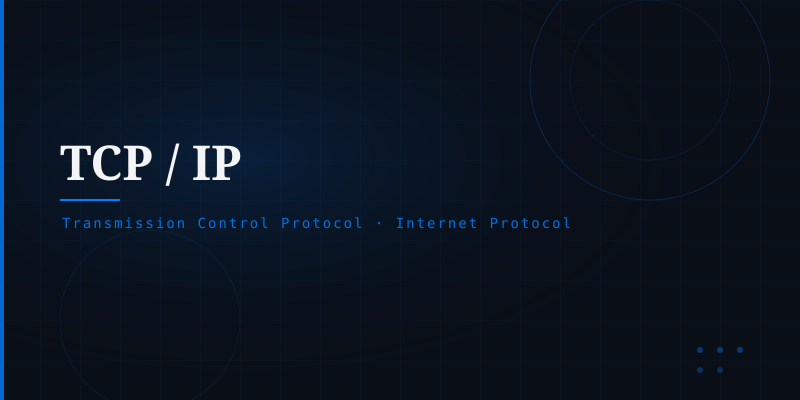

What is TCP/IP?
TCP/IP is a suite of communication protocols that defines how data is packaged, addressed, transmitted, routed, and received across networks. It is the backbone of the Internet and virtually every modern network.
The name refers to two of its most important protocols: the Transmission Control Protocol (TCP) and the Internet Protocol (IP), though the suite includes many others such as UDP, ICMP, and DNS.
The Two Core Protocols
Handles addressing and routing. Each device is assigned an IP address so data packets can be delivered to the right destination.
Ensures reliable, ordered delivery. It breaks data into packets, numbers them, and reassembles them correctly at the destination.
The Four-Layer Model
TCP/IP is described as a four-layer model:
Application → Transport → Internet → Network Access
Each layer has a specific responsibility and communicates only with the layers directly above and below it, enabling modular, interoperable design.
Why It Matters
Without TCP/IP, the Web, email, video streaming, and virtually every Internet service would not exist. Its open, vendor-neutral design is what allowed the Internet to scale from a handful of research computers in the 1960s to billions of devices today.